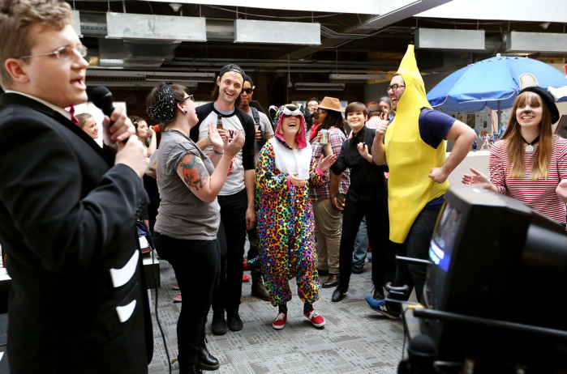
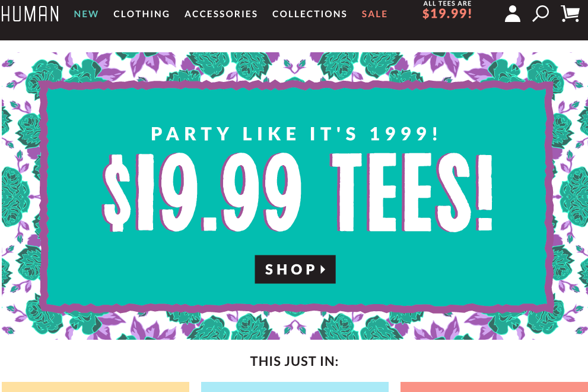

Print Syndicate is a design, marketing and technology company that functions in e-commerce. On a mission to "enable self-expression through exceptional design,” the Print Syndicate team interprets and converts social trends into digital designs, which are then printed (on apparel, phone cases, housewares, etc.) and sold through the company's multiple online brands.

I joined Print Syndicate in the summer of 2014, an opportunity I found through a Venture for America fellowship. As part of the operations team, I’ve been involved in nearly all of the processes behind our brands, from strategy, business development, marketing, and project management through website optimization, reporting, data analysis, and customer experience. For reasons that are not entirely clear, I have yet to be called upon to model any of our products.
 Print Syndicate closed a Series A round in the winter of 2014 and was recently named one of America's Most Promising Companies of 2015 by Forbes.
Read more about Print Syndicate
- CNN Money: She mines popular memes for millions
- Columbus Dispatch: Creative slogans on clothing, home goods fuel expansion at Print Syndicate
- TechCrunch: Novelty T-Shirt Maker Print Syndicate Raises $4.25M Series A
- Columbus Business First: Print Syndicate raises $4.25M from investors, including CEOs of Groupon and Zappos
- Fast Company: A Gay, Black, Female CEO on Why it Pays to be an Open Book
- Columbus Business First: Why the Print Syndicate $4.25M raise took just a few months
- All Print Syndicate Press